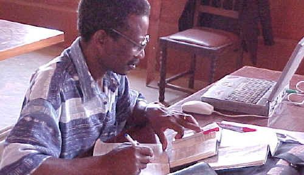

Checking editorial consistency
In Translation Editor, you can check editorial consistency of the vernacular text
and then correct the inconsistencies (for example, missing verse numbers).
Filter by the Scripture books that you need to check.
Translation Editor stores checking results in the FieldWorks project.
Here is a picture of a Bible translator checking the vernacular text.
